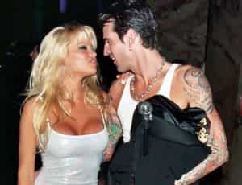

< < < Back
The Strange Life And Times Of Pamela Anderson – Return Of Kings
If you’re within plus or minus ten years of forty, the image of lifeguard CJ Parker poised to do her duty on the beaches of southern California wearing her red, one-piece, high-cut swimsuit is surely an image that’s indelibly seared into the lustful recesses of your brain. Like Rita Hayworth, Marilyn Monroe, Raquel Welch and Farrah Fawcett, Pamela Anderson was THE sex bomb for a generation of American men. In fact, given the global reach of the Baywatch franchise and her Playboy fame, she was likely an image in the masturbatory fantasies of countless non-American men of all colors and creeds the world over.
For her female prototype is, arguably, the most desirable of all but, certainly on a global scale, the rarest – white, blonde and slim with medium stature but busty with well-proportioned hips and a shapely derriere. Their overrepresentation in entertainment and pornography – supplied as it is almost exclusively by the northern and western hemispheres but consumed globally – belies the fact that this is an endangered species of female because of both global demographic change and the degradation of beauty within the nations that form the natural habitats of such women.
The pretty gal from Ladysmith, British Columbia

The blow-up sex-doll from Hollywood, California
I was a young college lad when I discovered Pamela Anderson and I was always intrigued by her rise to fame from the obscurity of a small town on Vancouver Island. Over the years I’ve caught bits and pieces of her story through her evolution. Perhaps devolution is the more apt term for it?
I’m likely one of the few that remember Pamela Anderson from her early days as a Labatt Blue girl and, like every woman, she hit her prime in her early 20s with a fetching natural beauty quite different to the image most people would associate her with today. Certainly, she maintained and even amplified her sex appeal for much longer than most women but her beauty never retained quite the same quality it had when she was the young gal from Ladysmith, British Columbia discovered on the jumbotron at a BC Lions football game.
Fast forward twenty plus years – past the Baywatch and Playboy fame – and it’s remarkable that she’s still standing. Three failed marriages, two widely publicized and circulated sex tapes of her fellating her rock jock paramours of the time (the first with her then boyfriend Brett Michaels of Poison and the second with her then husband, Tommy Lee of Motely Crue), three sets of cosmetic breast surgery (first to a D cup, then to a DD and, finally, removal altogether), an inability to establish herself as a serious actress after several terrible movie and TV roles and, last but not least, the Hepatitis C contracted from Tommy Lee are but a few of the difficulties she’s faced.
(Quick aside: she’s a vegan which is likely motivated more by her PETA sympathies than any nutritional considerations. However, I’m puzzled by the cognitive dissonance of women who espouse healthy living, avoidance of GMO foods and vaccines but don’t see a disconnect between that and the act of deliberate anesthetization, chest incision and implantation of petroleum-based by-products into the human body. I once worked with such a woman and, although her breasts were certainly pleasant to look at, her endless harping about the importance of healthy eating and lifestyle was tiresome given her habit of strutting around the office like a peacock wearing low cut tops and flaunting her silicone-enhanced breasts.)
Pam, you had beautiful natural breasts. Why did you mutilate yourself?!?
Not paying much attention to Hollywood these days, I was surprised to stumble across Anderson’s name in a recent news piece. To promote a speech she was giving at the Oxford Union, the now 49 year-old was on a British talk show together with a rabbi discussing the issue of pornography and the damage it causes to real relationships between men and women. An interesting subject but not one I wish to delve into here. My focus is on a comment that she made in the interview – “I recognize that I’ve been part of the problem“.

“You probably shouldn’t have swallowed. I forgot to tell you. I may have Hepatitis C.”
You mean our damaged sexual culture is not all because of men? Women possess moral agency, make choices in their behavior and are responsible for the outcomes too? While quite obviously correct, her statement was remarkable for a woman in today’s day and age and I’m surprised it didn’t get more attention.
Traditionally, it was always understood that, in the sexual interplay between men and women, part of the responsibility for keeping men’s lust in check was modesty on the part of women – modesty in dress, speech and conduct. As men, we all know the craziness of the testosterone-induced sexual appetite of our physiology and, notwithstanding the protestations of today’s sexually-empowered promiscuous female that it’s the same for women, the estrogen-testosterone mix in women has nothing like the power of the testosterone levels in men. Much like mastery of physical appetite in the interest of maintaining optimal body composition in the face of countless readily available junk-foods, it can, at times, require heroic levels of self-mastery in today’s culture to keep sexual appetite in check if you’re committed to a wife and family.
In bygone times, there was a widespread understanding – a social contract – that women would assist in helping the cause. In fact, that’s still evident in traditional religious communities be they Amish, Orthodox Jew or Muslim. And, while I certainly don’t wish to live in a place like Saudi Arabia and the aesthetic drudgery of burkha-clad women, I’ll confess that, in ways, I respect the moderate Muslim traditions. Their patriarchal culture does not allow its women to indulge in their inherent craziness and poor decision-making as it relates to the formidable sexual power they hold over men.
Moreover, many Western Muslim women that chose to don the hijab (a veil that leaves the face exposed), do so not because of the pressure from their patriarchal cultural but rather of their own volition because of the message that it sends – an emphatic “No!” to the idea of becoming a secular, sexually-liberated Western female. (Pity though the Christian or secular girl that tries to espouse a similar modesty. She’ll be roundly mocked for it.)
Oh you’re not a Muslim? You’re a modest Christian woman? In that case, Pussy Riot will be arriving shortly to desecrate your sacred liturgy while Western media and celebrities defend their freedom of speech and artistic expression.
In today’s Western culture of entitled and promiscuous women, Slut Walks and FEMEN agitation, openly discussing such sentiments as a man will get you harassed, fired and driven from polite society. Consider the poor mild-mannered academic who has the temerity to point out a valid analogy in response to the insanity of the Slut Walk phenomenon.
To say, “While the burglar is still guilty of theft, the homeowner who has left all the doors and windows of his home wide open while on vacation is certainly reckless”, is a blasphemy when applied to the behavior of today’s Western woman. Such common sense has no place in today’s rape culture-obsessed climate of misandry and so, naturally, the man’s message must be completely distorted and he must be shamed and blacklisted (not unlike the similar experience of our very own Roosh).
I submit that Pamela Anderson’s acknowledgement was a remarkable piece of honesty for a woman. She acknowledged female moral agency in our damaged sexual culture (obvious to all us red-pill men but rarely acknowledged by women themselves). I haven’t followed the story since and perhaps it was a careless piece of honesty on her part that she’s since retracted in the face of a PC onslaught. (Chrissie Hynde of the Pretenders faced such criticism for stating in her autobiography, “Reckless”, that she bore responsibility for being sexually assaulted by a group of bikers in her younger days because of her careless stupidity in maintaining their company alone late at night while drinking and flirting.)
For whatever reason, I have an affinity for the long-gone cutie from Ladysmith British Columbia and perhaps my respect for her honesty is foolish sentimentality. Yes, she’s still a total loon. And yes, the anti-porn activism is likely just the prevarication of a post-Wall woman seeking meaning to compensate for the loss of her seductive power to elicit lust in the eyes of the men around her. How painful that loss of power must be for a woman! However, I respect those who take responsibility for themselves, their actions and the part they’ve played in a dysfunctional dynamic or conflict. It’s always easy to point the finger at others but so difficult to look critically at ourselves.
Aside from her tumultuous celebrity, Pamela Anderson has had her share of challenges. From several years of childhood sexual abuse at the hands of female babysitter (What?!? A female perpetrator of sexual abuse?), to her rape as a teenager (a real rape – not one of those drunken, mutually careless college hook-ups that’s later regretted and called rape by only the female party to it), through her crazy days of superstardom, you have to give the woman some credit for surviving it all.
As red pill men of the manosphere, we can see her journey as a by-product of the breakdown of patriarchy and tradition. A patriarchy and tradition that, at one time, perhaps would have protected this woman from the malignant forces around her and the self-destructive decision-making and confusion so often a feature of the “liberated” female mind. Yes, even in a bygone era she could very well have ended up working in a brothel but, compared to the number of women today engaged in everything from mindless promiscuity to pornography to the sex trade, both the absolute and relative number of harlots was surely lower then than it is now.
No, sorry Pam, no stirring in my loins whatsoever. Nothing. Nada. Ziltch. Your sexual power is gone. How’s your cooking?
Of course, we understand that there are women who are victims of exploitation and desperation and they deserve our mercy, compassion and aid. But it is a red pill truth that attractive women learn very early the magic of their sexual spell on men and they become adept at monetizing it if they can. Some do so based on ill-conceived and confused short-term thinking based on the values of our decadent age with the results of their decisions doing damage to both themselves and the culture around them. Others still operate within the latent fumes of traditionalism and patriarchy and make more prudent long-term decisions allowing them and the culture around them to flourish. Maybe one day our society will be honest enough again to acknowledge that and admit that women too possess moral agency in these matters. Even the blonde bombshell from Ladysmith British Columbia had enough sense to do so.
Read Next: Elderly Feminist Is Preparing Young Adherents For A Life Of Little Sex